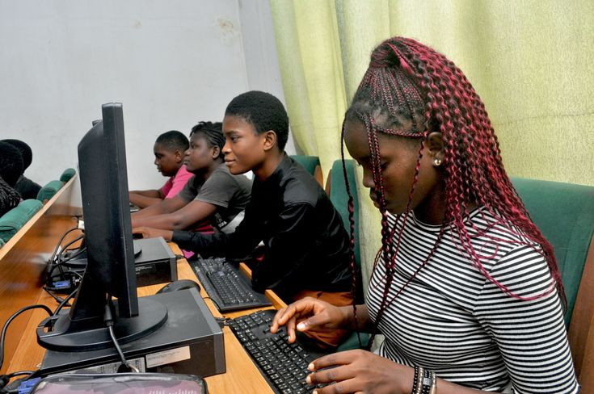

Nos Services
Une expertise complète, du diagnostic à la certification.
K&B Group propose une gamme intégrée de services pour accompagner la montée en compétence des organisations et de leurs talents.
K&B Management
Conseil, accompagnement et transformation des organisations
K&B Management accompagne les entreprises, institutions et organisations dans l’amélioration de leur performance, l’optimisation de leurs processus et leur transformation organisationnelle. Notre approche combine expertise métier, outils modernes et accompagnement stratégique afin d’aider les organisations à gagner en efficacité et en compétitivité. Nos domaines d’intervention
- Management & Organisation
- Gestion financière & performance
- Audit & Contrôle interne
- Transformation numérique
Grâce à notre expertise, nous vous aidons à maintenir une conformité continue, réduisant les risques juridiques et améliorant votre réputation.
Demandez un diagnostic
K&B Training Center
Former les talents d’aujourd’hui pour les défis de demain
K&B Training Center est un centre de formation professionnelle dédié au développement de compétences pratiques, certifiantes et directement exploitables sur le marché du travail. Nous proposons des formations alignées aux standards internationaux et adaptées aux besoins réels des entreprises. Nos catégories de formation
- Certifications professionnelles
- Bureautique & Productivité
- Formations métiers
- IA & Transformation digitale

K&B Digital Lab
Le laboratoire d’innovation technologique de K&B Group
K&B Digital Lab est le pôle recherche, innovation et développement technologique de K&B Group. Nous concevons des applications, plateformes web et solutions digitales adaptées aux besoins des entreprises, institutions et utilisateurs africains. Nos expertises
- Développement Web
- Développement d’applications
- Intégration de solutions informatiques
- Innovation & R&D